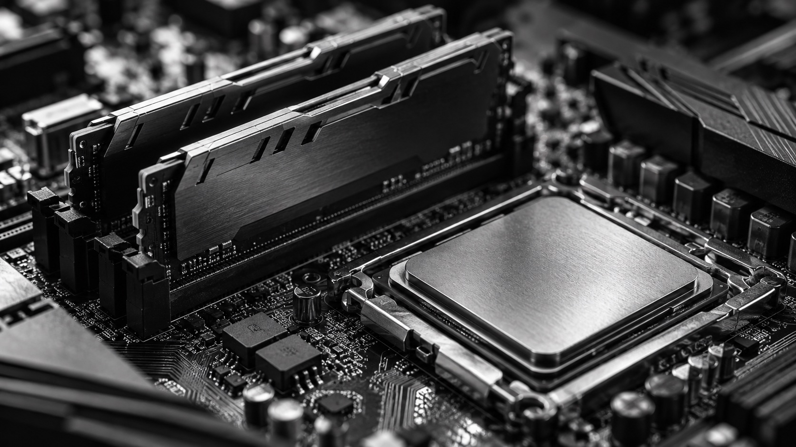
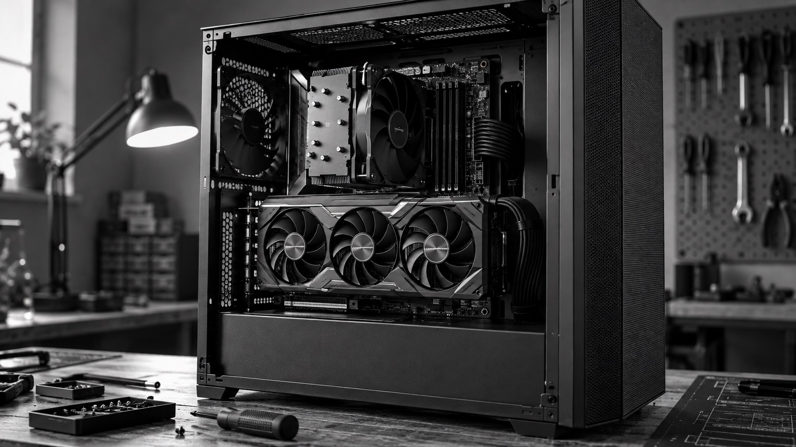

A practitioner's weekly digest of the most important developments in AI, XR, spatial computing, robotics, and media. Curated from the Morning Brief daily podcast. Also tracking companies and themes across briefs.
Subscribe to the daily audio version
A fresh episode drops every morning before 7am. Add it to any podcast app with the RSS feed below.
Apple Podcasts — File → Add a Show by URL
Overcast / Pocket Casts / Castro — Add by RSS feed
https://PhoenixJenn.github.io/morning-brief/feed.xml
Published every Sunday morning.

